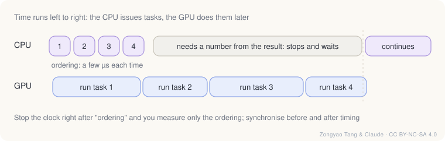

This unit follows one line: the GPU and the CPU are two machines designed for different goals → so your Python program and the GPU each run on their own → so "slow" can come from three different places → and the only way to know which is to measure. Every later unit unfolds along this line.
Part 3 · The GPU and the CUDA execution model3.1 The GPU environment and a first performance analysis
Translated by AI (Anthropic's Claude) from the Chinese edition. The Chinese original is the reference.
This unit answersWhat makes a GPU fast? Where does my program's time actually go?
Continues from 1.5: you have already trained GPT-2 on a GPU; now take it apart to see why the GPU is fast and where a program is slow.
- The CPU is a sports car, the GPU a bus
- Python is only placing orders: the GPU executes asynchronously
- A program is slow for only three reasons: compute, bandwidth, overhead
- Measure first, then optimise: the bottleneck is often not where you think
Explanation
1The CPU is a sports car, the GPU a bus
The CPU is designed to "finish a single task as fast as possible" (latency-oriented): large caches, branch prediction, out-of-order execution; its transistors go into making one thread run fast. The GPU is designed to "finish the most tasks per unit of time" (throughput-oriented): thousands of simple compute units plus very high memory bandwidth; a single thread is not fast, but enormous amounts of identical work move forward at once.
A chip has a limited number of transistors, and where they go decides what the machine is good at.
The CPU gives most of its area to parts that "get one stream of instructions finished as fast as possible": very large caches (the data is right at hand), branch prediction (guessing the next step ahead), out-of-order execution (do whichever instruction can be done first). The units that actually do arithmetic take only a small part. A server CPU has a few dozen such cores.
The GPU does the opposite: control logic and caches are kept simple, and all the area saved is laid out as arithmetic units, paired with very high-bandwidth memory. A GPU can move tens or hundreds of thousands of threads forward at once. Any one of those threads is much slower than a CPU thread, and waits longer for data.
The difference comes down to two words: the CPU pursues low latency (how fast one thing gets done), the GPU high throughput (how many things get done per unit of time). Multiply 10 million numbers by 2: one CPU core computes them one by one, each very quickly; the GPU is slow at each but computes hundreds of thousands at once, and the total time is much shorter. With only 100 numbers, sending the data to the GPU takes longer than the CPU computing them outright.
An analogyA sports car can go anywhere and gets one person there fastest; a bus carries dozens of people on a fixed route. To move ten thousand people the bus wins; to take one person, the sports car.
So the GPU only pays off when the work is large and made of many identical small tasks (each element of a matrix, each pixel of an image); parts with complex logic that must run serially stay on the CPU.
Used later in The GPU does not avoid waiting; it fills the waiting with other workMoving the environment onto the GPU: thousands upon thousands of simulations at onceSourcesPMPP §1.1- If the GPU is a separate machine designed for throughput, how does the Python program you write relate to it? They do not run together, step by step.
2Python is only placing orders: the GPU executes asynchronously
When a CUDA operation is called, the CPU just puts the kernel on the GPU's execution queue and returns at once; the GPU does the computation later. The CPU and the GPU are two parallel timelines.
When
y = x @ wruns, what PyTorch does is put the task "do one matrix multiplication" on the GPU's task queue and return at once. At this pointyis only a handle saying "the result will be here later"; the GPU may not have started. Only when you really need numbers from the result (print(y),y.item(),y.cpu()) does the CPU stop and wait for the GPU to finish.
Issuing a task takes the CPU a few microseconds; it stops to wait only when it needs the result So timing like this is wrong:
t0 = time.time() y = x @ w # only puts the task on the queue print(time.time() - t0) # measures the time to "place the order", say 0.0001 seconds
The right way is to call
torch.cuda.synchronize()at both the start and the end of the timing; it means "wait for the GPU to finish everything on its queue".The mechanism has another side: the CPU sends the GPU its tasks one by one. If every task is tiny (say one addition on each of hundreds of small tensors), the CPU cannot issue tasks as fast as the GPU completes them, and the GPU spends most of its time waiting. Then what is slow is not the GPU but the giving of orders.
Hands-on: timing GPU code correctly
Three points: warm up, synchronise, average over several runs.
import time, torch def bench(fn, repeat=20): for _ in range(3): fn() # warm up torch.cuda.synchronize() # wait for all earlier tasks to finish before starting the clock t0 = time.perf_counter() for _ in range(repeat): fn() torch.cuda.synchronize() # wait until these repeats are really done before stopping the clock return (time.perf_counter() - t0) / repeatWhy neither synchronisation can be left out: the first makes sure the GPU is idle at the "start", or unfinished earlier tasks get counted in; the second makes sure the tasks really are finished at the "end", or you have measured only the time to place the orders.
You can see the asynchrony for yourself: time
y = x @ xon a very large matrix without synchronising and you get a fraction of a millisecond; with synchronisation you get the real tens of milliseconds. The difference between the two numbers is how long the GPU kept working after you "thought it was done".Another way, which does not interrupt the CPU, is
torch.cuda.Event(enable_timing=True): insert two time markers into the GPU's task queue, let the GPU itself record when execution reaches each marker, and read the milliseconds at the end withstart.elapsed_time(end).An analogyLike ordering in a restaurant: the waiter hands the order to the kitchen and goes to the next table; when the dish will be ready, you have to ask the kitchen.
So timing directly with time.time() measures only the time to "place the order"; call torch.cuda.synchronize() before and after, or use CUDA events. Conversely, when the CPU places orders too slowly, the GPU sits idle waiting; this is "overhead-bound".
Used later in A program is slow for only three reasons: compute, bandwidth, overheadThe CPU and the GPU each have their own memory, with a narrow road betweenA queue sits between the CPU and the GPU: issuing a task is not finishing itSourcesBest Practices §8.1 Timing- The previous card said the GPU may sit waiting for the CPU to issue tasks. Generalise that: where, in all, can a GPU program's time go?
3A program is slow for only three reasons: compute, bandwidth, overhead
Time on the GPU goes either into computing (compute), into moving data (memory bandwidth), or into chores besides these two (overhead: interpreting Python, launching kernels, framework scheduling). Decide which one first, and optimisation has a direction.
Take one computation apart, and its time can fall in only three places:
- Compute: the arithmetic units are really doing multiplications and additions. The typical example is a large matrix multiplication.
- Bandwidth (memory): the arithmetic units are waiting for data to arrive from GPU memory, or for results to be written back. Typical examples are
x + 1, ReLU, LayerNorm: each element gets one or two operations, yet the whole tensor must be read once and written once. - Overhead: the GPU is not working at all. The Python interpreter is running, the framework is checking shapes and types, the CPU is issuing the next task. The typical example is a small model with small tensors.
The cures for the three are completely different, and the wrong one does nothing. A bandwidth-bound kernel, for instance, barely gets faster on a GPU with twice the compute, because it was not using all its compute in the first place; for an overhead-bound small model, optimising matrix multiplications to the limit does nothing, because the time is spent in Python.
A quick way to tell: double the batch. If the time barely changes, it was overhead-bound (the GPU had lots of idle capacity); if the time nearly doubles too, the GPU was already working at full load, and the bottleneck is compute or bandwidth.
An analogyA factory with low output: the machines may not be fast enough, the raw materials may not be getting in, or the workers may be filling in forms and sitting in meetings. Upgrading the machines does not solve raw materials stuck on the road.
So classify before optimising: compute-bound, reduce or speed up the computation (Tensor Cores, lower precision); bandwidth-bound, move less data (operator fusion, data reuse); overhead-bound, reduce the number of kernels and the Python scheduling (CUDA Graphs, torch.compile).
Builds on Python is only placing orders: the GPU executes asynchronously"Slow" on the pipeline comes in only four kinds: waiting for data, on compute, for orders, for the other GPUs- Knowing slowness has three kinds of causes, the next question is: which kind is my program? Which step is slow? This cannot be guessed.
4Measure first, then optimise: the bottleneck is often not where you think
The profiler tells you which kernels and which stretches of CPU code the time actually goes to. Amdahl's law says: optimise only a part that takes a fraction p of the total time, and the whole gets at most 1/(1−p) times faster.
Intuition is often wrong about performance. You think the attention matrix multiplication is slow, and actually it is data loading, or an inconspicuous
.item()making the CPU and GPU synchronise at every step.The profiler (
torch.profiler) lists how much time each operator spent on the CPU and on the GPU. When reading its output, watch two columns: entries with high CPU time and low CUDA time are overhead; entries with high CUDA time are where the GPU is really busy.Amdahl's law shows why to find the biggest piece first. Suppose a training step takes 100 milliseconds, attention 60 of them and LayerNorm 5:
- Make LayerNorm 10 times faster: 5 → 0.5 ms, total 95.5 ms, only 4.5% faster.
- Make attention 2 times faster: 60 → 30 ms, total 70 ms, 30% faster.
The same effort, results an order of magnitude apart. And after each optimisation the bottleneck moves, so you must measure again. So the rhythm of performance work is always: measure → change one thing → measure again.
Hands-on: an analysis with torch.profiler, and reading its output
Step one: wrap the code to analyse. First run a few steps to warm up (the first run includes one-off costs such as loading and compiling, which must not be counted), then start recording:
from torch.profiler import profile, ProfilerActivity for _ in range(3): train_step() # warm up, not recorded with profile(activities=[ProfilerActivity.CPU, ProfilerActivity.CUDA]) as prof: for _ in range(10): train_step() print(prof.key_averages().table(sort_by="cuda_time_total", row_limit=15))Step two: understand the table's columns. Each row is one kind of operator (such as
aten::matmul,aten::layer_norm):- Self CPU / CPU total: the time this operator spent on the CPU. Self counts only itself; total includes the other operators it calls. This is the overhead of Python, framework scheduling and issuing tasks.
- Self CUDA / CUDA total: the time its kernels actually ran on the GPU.
- # of Calls: the number of calls.
Step three: draw conclusions from the table. Look in this order:
- Sort by
cuda_time_totalfirst and look at the top three rows. Together they usually take most of the time; that is where to optimise (Amdahl's law). - Then sort by
cpu_time_total. If an operator has high CPU time, low CUDA time and many calls, it is "overhead-bound": the kernel itself is fast, and the time goes into issuing tasks again and again. - If
aten::item,aten::toorcudaMemcpyappear with a sizeable share, the code has unnecessary CPU↔GPU copies or synchronisations. - Add up all the CUDA time and compare it with the actual total time of these 10 steps. If CUDA time is less than half, the GPU spends half its time waiting, and the bottleneck is on the CPU side (data loading, Python).
Step four (optional): look at the timeline. The table has only totals, not order. Export the timeline to see where the GPU has gaps:
prof.export_chrome_trace("trace.json")Open
chrome://tracingin Chrome (or ui.perfetto.dev) and load the file. The top rows are CPU threads, the bottom ones the GPU. If the GPU row comes in pieces with clear gaps between them, the gaps are the GPU waiting for the CPU.Common traps: drawing conclusions from a single step (always warm up and run several steps); measuring total time with the profiler on (the profiler has its own overhead; measure total time with it off, using synchronised timing).
An analogyA one-hour commute, 50 minutes of it in traffic and 10 minutes walking. Train yourself to walk it in 5 minutes and the whole trip is less than a tenth faster.
So profile first and work on the biggest piece; a kernel that takes 5% of the time, made ten times faster, barely changes the whole.
Used later in Use Triton first; write CUDA only when it is shown not to be enoughScaling efficiency: multi-GPU throughput ÷ (single-GPU throughput × number of GPUs)Change only one thing at a time, and leave data behind every timeSourcesBest Practices §3.1 ProfileBest Practices §3.1.3 Amdahl's Law
Putting it together
Because the GPU is designed for throughput, it suits large batches of identical work, and it runs asynchronously from the CPU; so intuitive timing lies, and slowness has more than one cause (compute, bandwidth, overhead); so before optimising, use the profiler to find the biggest piece.
Test yourself
Without looking back at the explanation, say it in your own words.
- How do the design goals of the CPU and the GPU differ? What does this decide about which work suits the GPU?
- Why is timing without torch.cuda.synchronize() not to be trusted?
- What three kinds of reasons can make a GPU program slow? What is the direction of optimisation for each?
- Why profile before optimising? Give an example using Amdahl's law.